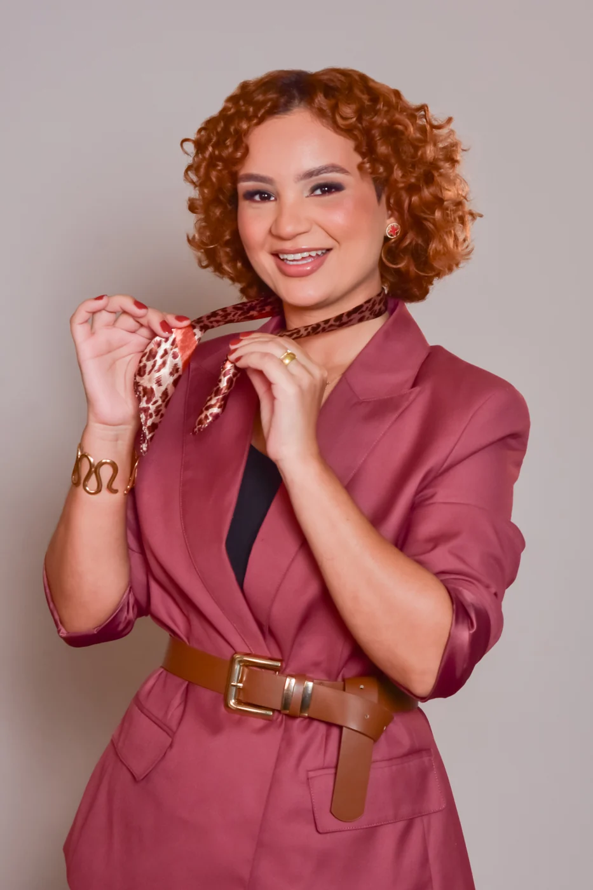
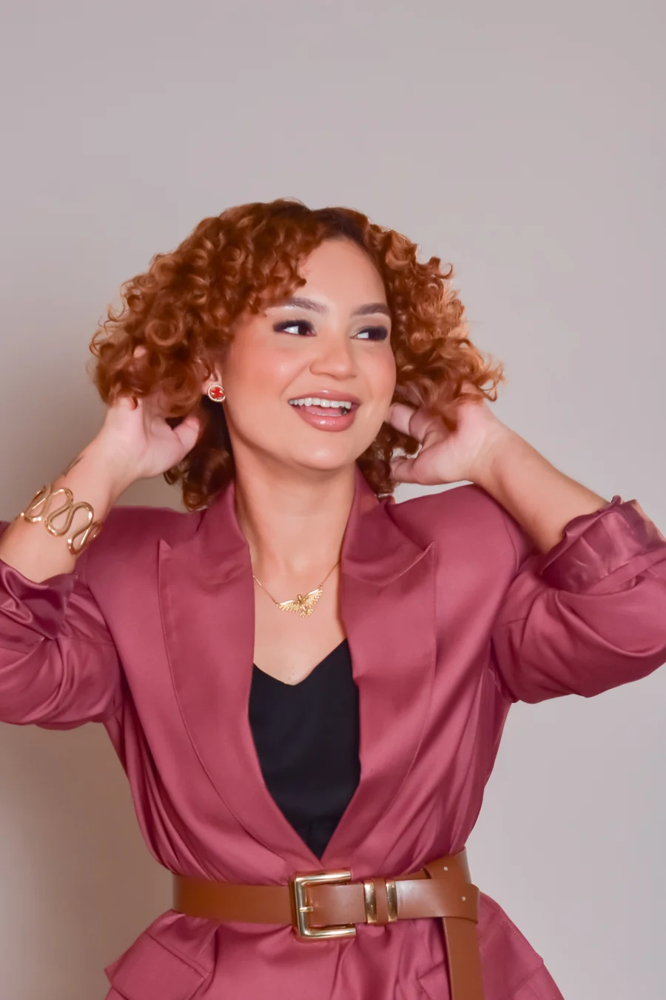
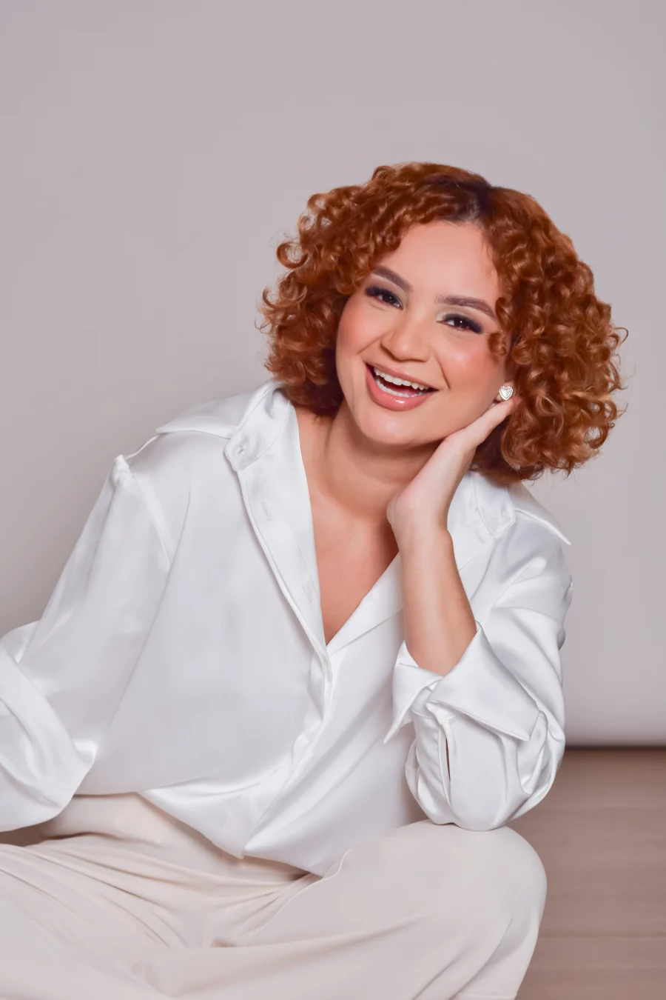
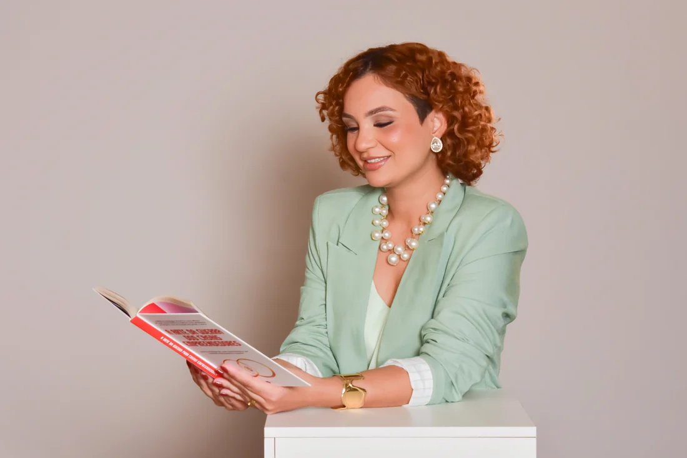
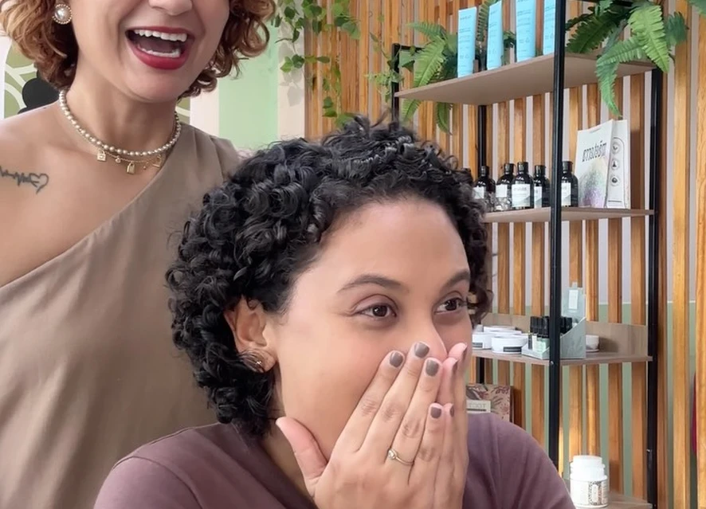
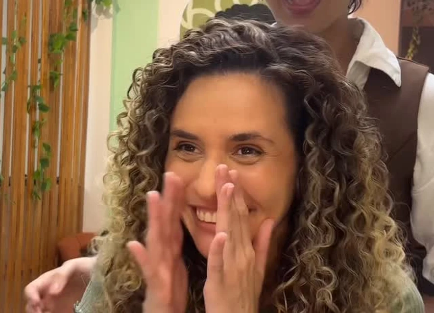
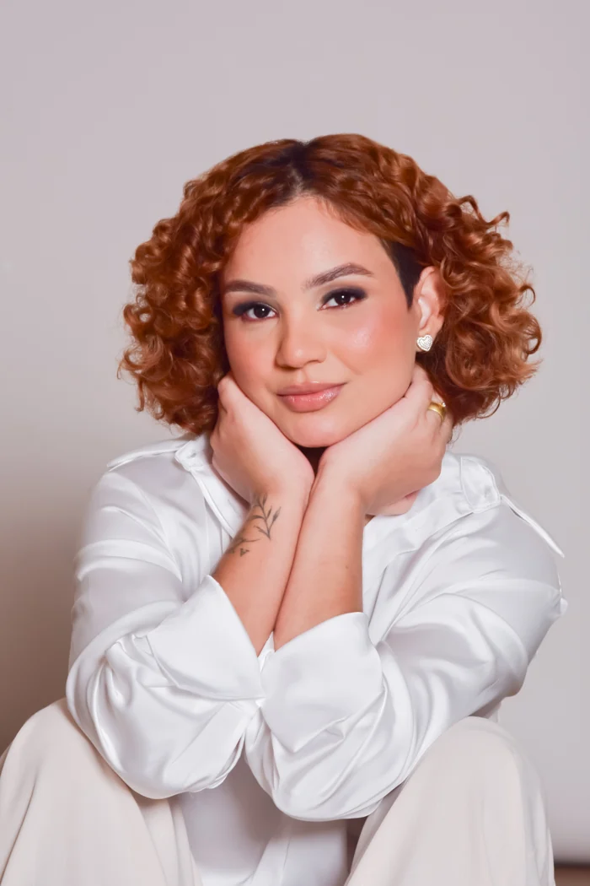

Identidade
Reencontre a sua imagem, com espaço para ser quem você é.
Estúdio especializado em curvaturas
Sou Andreza Souza. Crio cortes autorais para cabelos ondulados, cacheados e crespos, respeitando a sua curvatura e a sua história.
Agendar pelo WhatsAppVicente de Carvalho Guarujá, SP



Mais que um corte
No Método Corte DêCachos, cada corte é pensado para valorizar a curvatura, respeitar a história e revelar a beleza que sempre esteve ali.
Reencontre a sua imagem, com espaço para ser quem você é.
Valorize a textura natural e o movimento que fazem parte da sua história.
Escolha como quer usar seu cabelo, no seu tempo.
Método autoral

Entendo sua história com o cabelo, seu momento e o que você deseja para essa mudança.
Observo a curvatura, a textura e o formato do rosto para planejar o corte com você.
Desenho um corte para o seu cabelo, considerando o caimento e o movimento dos fios.
Finalizo e mostro como cuidar dos cachos em casa, com orientações para a sua rotina.
Serviços
Conheça o que está incluído em cada atendimento e consulte o investimento pelo WhatsApp.
Corte autoral
Corte + tratamento
Resultados reais

Depois de um ano em transição, Alana cortou a parte alisada e assumiu sua curvatura natural.

O iluminado destaca o desenho dos cachos e dá profundidade à cor.

Quem vai cuidar de você
Também vivi a transição capilar. Sei o que é reaprender a cuidar da própria textura e se reconhecer no espelho de um jeito novo.
Em 10 anos de caminhada profissional, desenvolvi minha assinatura em cortes para curvaturas. No DêCachos, cada atendimento começa com uma conversa sobre o que você quer para o seu cabelo e como gosta de usá-lo no dia a dia.
Sua visita ao DêCachos
Seu cabelo também faz parte da sua história. Dê aos seus cachos a direção que eles merecem.
Agendar avaliação via WhatsAppAtendimento com horário marcado.
Abrir rota no Google Maps